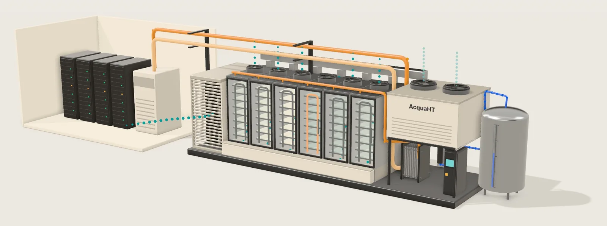
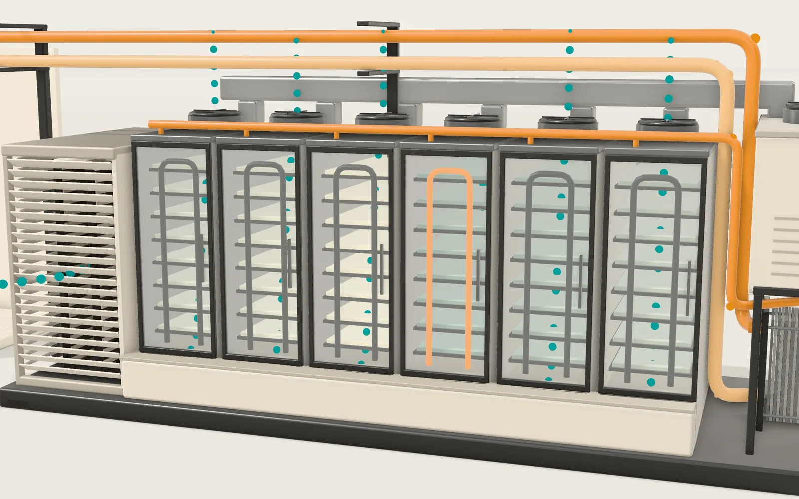
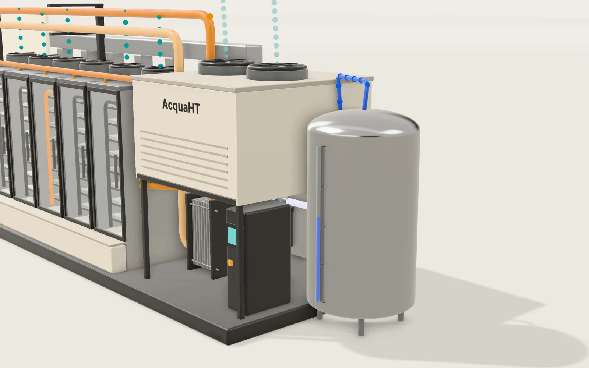
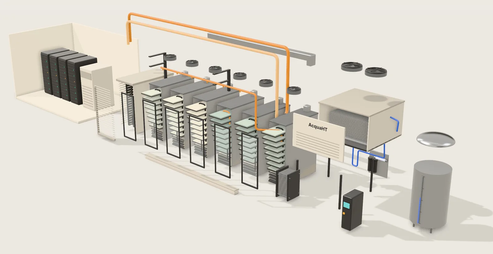
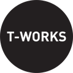

45,600 L
of water a day for one 1 MW data hall that cools with towers
PublishedEESI, June 2025 · average 1.9 L per kWh

Pre-seed · Hyderabad, India
AI data centres run hot all day, and most of that heat is thrown away. We are building a machine that uses it to pull clean drinking water out of the air.
Scroll to take the machine apart
01 · The heat
Warm water from the data centre's cooling loop flows to a heat exchanger. Their water and ours never touch, and the servers' own loop is left alone. If anything on our side fails, a bypass keeps their cooling running. Our side gets water at about 50 °C.
02 · The air
Fans pull outdoor air in through louvres and two filters. A duct under the chambers carries it to each one.
03 · Catch and release
Each chamber holds trays of a salty gel. For 100 minutes it soaks up moisture from the air, like a sponge. Then the doors close, hot water runs through the tubes, and for 20 minutes the gel lets the water go as vapour. Six chambers take turns, so one is always giving water.
04 · The condenser
The vapour reaches a condenser, cools down and turns back into drops of water. On a hot Hyderabad afternoon this is the hardest step, so it is the first one we test.
05 · Clean water
The water passes a sediment filter, carbon and UV light, then fills a steel tank. We will test every batch against India's drinking-water standard, IS 10500, and for lithium, because the gel holds a lithium salt.
Where we are
The gel comes from published lab work at UT Austin (PNAS, 2023). We did not invent it. Our job is the machine around it. Before we build this module, we run the gel through 1,000 soak-and-release cycles on our own bench rigs. We call that Gate 1.
IIThe problem
I grew up in Siddipet, where drinking water came by tanker. Now the fastest-growing buildings in India are data centres, and many of them cool their servers by evaporating water.
Jerra Swamynathan, founder
45,600 L
of water a day for one 1 MW data hall that cools with towers
PublishedEESI, June 2025 · average 1.9 L per kWh
7+ GW
of data centres in India by 2030, up from 1.8 GW today
PublishedSavills India via Indian Infrastructure, July 2026
3.3×
more water tankers booked in Hyderabad in October 2026 than a year before
PublishedTelangana Today, 15 Oct 2026
The new buildings and the old tankers now want the same water. Meanwhile the buildings throw away heat all day.
IIIOur story

210 L
of water made in two field tests in Telangana
Measured
WHO + BIS
drinking-water limits met in lab tests
Measured
₹75,000
paid by a food company for one machine, May 2026
Measured
₹26 lakh
in grants that paid for all of it. No equity raised.
Measured
We built it in a Hyderabad workshop from a compressor, a copper coil and one fan. It worked. The water was safe to drink, and a customer paid for it.
Then we did the maths. A machine that chills air to make water uses 280 to 400 units of electricity for every 1,000 litres. That is a lot of power for a glass of water, and it makes the water cost far more than a tanker.
So we stopped asking how to make water with less electricity, and started asking where free heat was going to waste. The answer was humming away in every AI data centre.
IVThe idea
A salty gel published by UT Austin in 2023 soaks up moisture and lets it go when heated. AI chips turn almost every watt into heat. Put the two together and you get water from heat that was going in the bin anyway.
The catch, said upfront
In the lab the gel let go of its water at 40 °C, but next to a 25 °C condenser. On a hot Hyderabad afternoon a condenser runs at 35 to 45 °C. So we design for heat at 55 to 75 °C.
Sources: Guan et al., PNAS 2023; ASHRAE liquid-cooling classes. The 55–75 °C band is our steam-table estimate, not yet measured.
VThe machine · AW-1000 concept
It borrows warm water from the site's cooling loop through a heat exchanger and never touches the servers. If it breaks, the data centre does not notice.




Don't take our word for it. Every model number here comes from our open simulator. It runs the machine through Hyderabad's weather, month by month. Change the heat, the condenser or the amount of gel, and watch the numbers move.
Open the simulatorVIThe economics
We would rather show you the real numbers now than have you find them later. Cost to make 1,000 litres in Hyderabad. These are model estimates, not measurements.
So no, we can't beat a tanker in Hyderabad today. We start with buyers who already pay more than ₹1,000 per 1,000 litres, or who can't buy water legally at all.
Going from 50 °C to 65 °C heat gives about 67% more water from the same gel.
ModelAbout twice the water over a year, and no summer slump. It costs more electricity and more money up front.
ModelA cooling tower on our condenser would evaporate about as much water as we make. A lot of effort for zero water.
ModelFans are the biggest unknown on the power bill. We meter them on the bench rig before we promise anything.
TargetAt ₹800 per kg, replaced every 3 years, the gel is a small part of the cost.
ModelSites with no legal water source, buyers of water credits, drinking water, and expensive-water places like the Gulf.
TargetThe question we can't answer yet. Our hand calculation says 40–60 Wh of electricity per litre. Our simulator, which counts the fans at full speed, says 170–260. Only a real test settles it, so the bench rig measures it on every cycle. Our target is under 50.
Check it yourselfVIIThe plan
Each step happens only if the one before it passes. If the gel fails Gate 1, we switch to another sorbent, and we will know in weeks, not years.
DoneProof gatesScale up
VIIIWho checked our work
These are grants, prizes and programmes, not investors. We have raised no equity. Their ₹26 lakh paid for everything you see on this page.




Logos belong to their owners. They show programmes we took part in, not endorsement.
IXTeam
We have already built, tested and sold one water machine on very little money. Now we want to do it again with free heat.

Founder & CEO
Grew up with tanker water in Siddipet. Built BiGeo, a rural delivery-routing company, before this. Mercedes-Benz beVisioneers Fellow 2025.

Biotech & research
Microbiology and DNA testing. Her job is to make sure nobody drinks anything they shouldn't.
R&D engineer
Builds our machines, then tests them until they stop surprising us.

Co-founder, business development
Computer engineer. Finds the people who need water and signs them up.
Advisors: Prof. Soumyajit Roy (IISER Kolkata) · Vijender Mogili (Bala Vikasa) · RYLT (manufacturing partner).
Hiring with this round: a sorbent chemist and a data-centre cooling advisor. Right now our sorbent expert is a research paper, and it doesn't reply to email.
XWork with us
We are raising a $750K pre-seed round. We are also looking for our first data-centre partner for a paid 6-month pilot, with pass or fail terms we agree on before we start.
InvestorsPre-seed, $750K
Data centresA paid 6-month pilot
ResearchersGel and field data to share
[ Launch no. 17 ]